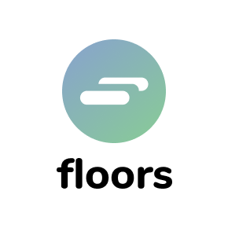
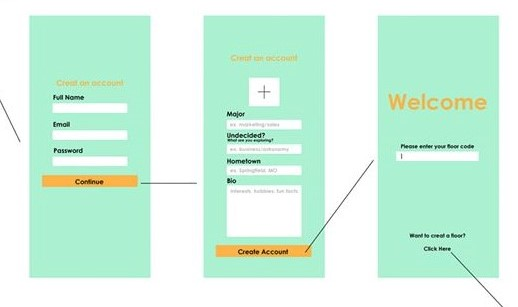
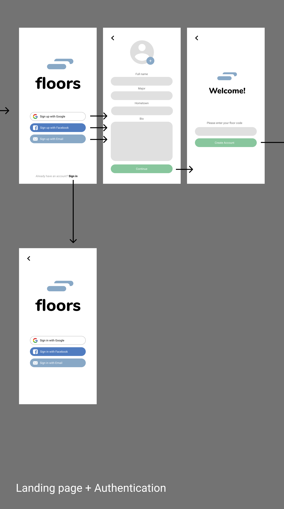
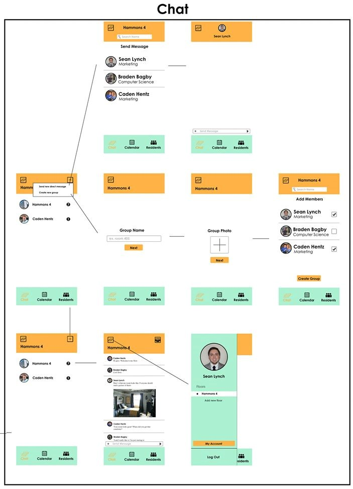
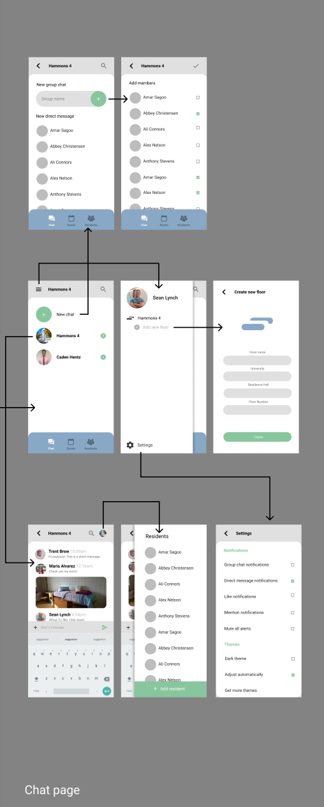
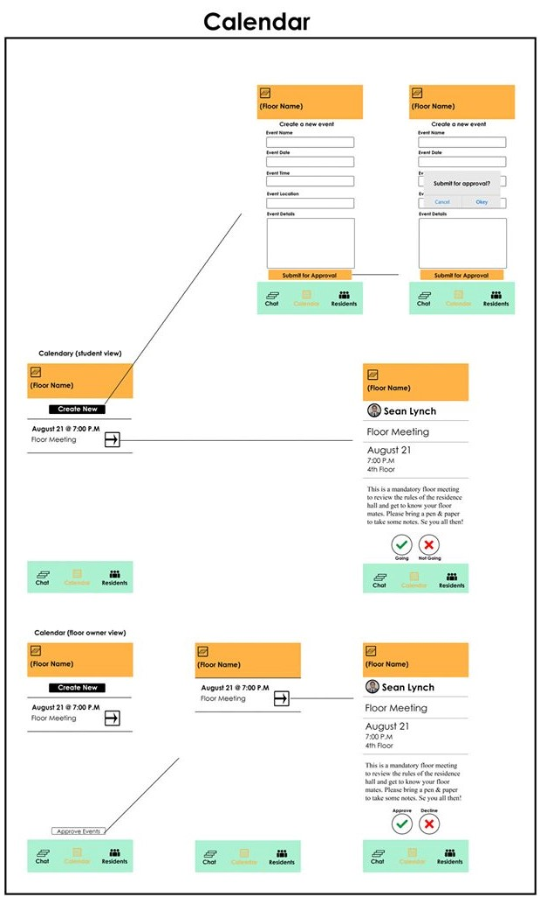
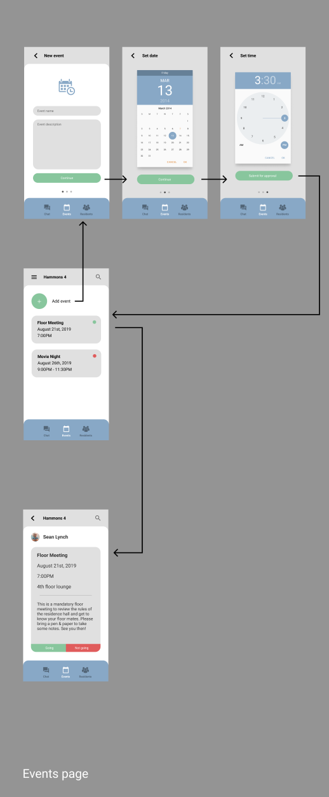

Floors is a mobile application for college students living in dormitories. The app is a hub for hallmates to chat, schedule events, meet like minded students and get in touch with their RAs.
Above is the original low-fidelity mockup that was received before the redesign process. I planned to use the UX tool Figma for the redesign of the wireframe as well as a rebranding with a new logo. Using figma I planned to implement a universal design that would work across Android and iOS, and I planned to streamline a few of the tasks by minimizing form submissions, and removing unnecessary activities altogether. This should improve user flow by removing some of the friction from excessive user input.
Above we can see the old logo provided with the original low-fi wireframe. This logo has a nice concept and generally works just fine, but it could be adjusted to look a bit more modern.
In the first few iterations of the new logo I was dedicated to maintaining the color scheme from the original wireframe so I played around with each color for the bars, but no matter what order I tried they each seemed a bit claustrophobic and the silhouette of the logo wasn’t very identifiable or inspired.
I found a bit more luck after subtracting out the bar in the center, leaving just enough space in between to create a nice abstraction that makes the silhouette of the logo much more identifiable and unique. I was still on the fence about the colors, as they were a bit Halloweeny still, but it was progress.
After implementing some gradients in Figma and finalizing the app icon itself, I think I finally found harmony with the logo. I decided to keep the green from the original, but mixed it with a soft blue which can be found throughout the wireframe as well.
In the original wireframe, there was notably no styling, the colors weren’t very harmonious, a few of the pages were unnecessary and disrupted user flow, and there were a ton of forms for the user to fill out. As a solution to these issues I wanted to use a similar visual identity to Google’s Material 2.0 as it creates a consistent feel across both Android and iOS, I wanted to implement a nicer color scheme by getting rid of the orange, I wanted to minimize the amount of pages a user would have to navigate through to perform a task such as setting up an event, and I wanted to minimize the amount of forms the user has to fill out. Here are a few comparisons to illustrate the improvements:
Old login page:
New login page:
As shown above, the new mockup uses social media to login, making the user experience a bit more frictionless.
Old chat page:
New chat page:
In the new chat page, without counting the settings and the hidden drawers, we can see that the user now only needs to visit 2 separate pages to complete the creation of a group or a direct message rather than 4 pages. This was accomplished by combining the processes of naming a group and adding members, while adding a group photo is accessible within the options.
Old events page:
New events page:
Again, we can see that in the revision of the events page the number of separate activities was minimized to 5 instead of 7. This was accomplished by requiring only 2 forms which are for the title and the description of the event.
I believe that this mockup can be integrated nicely natively, or with React Native, or Flutter. The UI is mostly inspired by Material Design but also by Samsung’s oneUI as most of the corners are rounded. This is to create a more visible hierarchy of which elements are higher on the z-axis as they divide content. I feel much more comfortable using Figma after this project, especially considering I discovered it can be used as a nice substitute for even Adobe Illustrator. I’m hoping implementation of this design is pretty frictionless, but I’d love to go back and experiment with some interactivity and animations for this UI at some point.